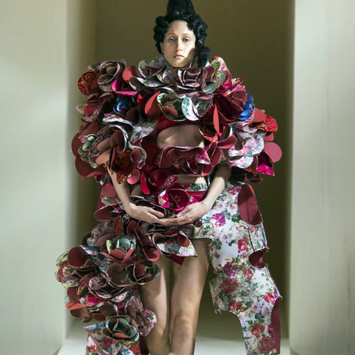
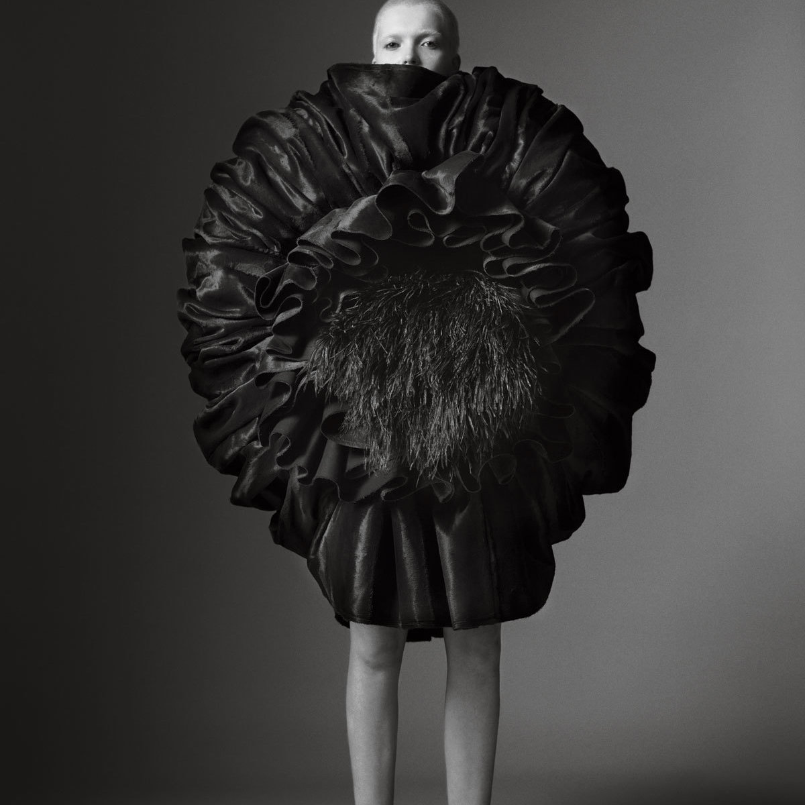
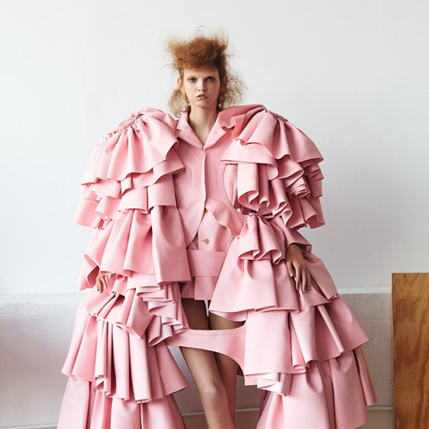

REI KAWAKUBO
Kawakubo estudió Filosofía y Literatura en la Universidad de Keio, donde su padre trabajaba, especializándose en Historia de la Estética y Artes.
Después de su graduación en 1964, comenzó a trabajar para una compañía textil y posteriormente como stylist freelance en 1967.

CDG
En 1969 crea en Tokio la marca Comme des Garçons (francés para “Como los niños”) inspirándose en la canción “Tous les garçons et les filles” (Todos los niños y las niñas) de la cantautora francesa Francoise Hardy. La marca adquirió relevancia expandiéndose en el mercado japonés en los años siguientes.
En 1981 hace su debut en París, con una colección disruptiva y transgresora que cayó como una bomba en la moda parisina, ganándose popularmente el nombre de “Hiroshima Chic”.

FAMA
En reconocimiento a la gran contribución de Kawakubo a la moda, el MET realizó una exhibición del mayo a septiembre de 2017 titulada Rei Kawakubo/Comme des Garçons, Art of the In-Between, una curaduría de 140 vestidos que definieron su carrera y su estrecha relación con el arte.